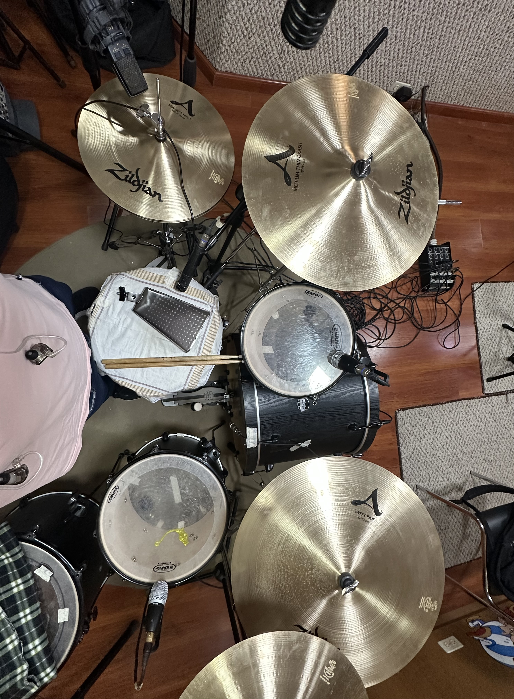
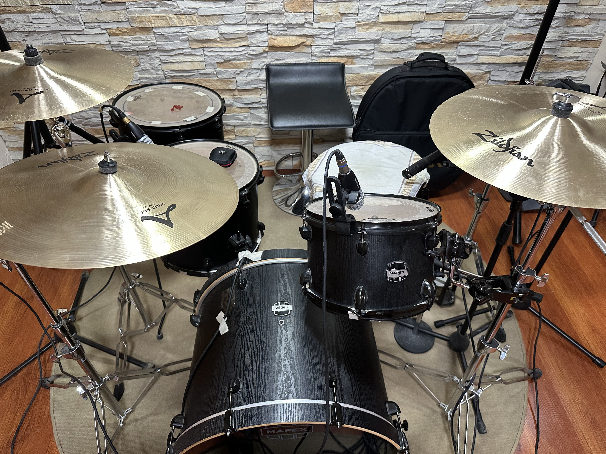

Tipos de Baterías
Las baterías son un componente esencial en cualquier banda. A continuación, exploramos los diferentes tipos y sus características:
| Tipo de Batería | Características |
|---|---|
| Baterías Acústicas | Estas son las más tradicionales, hechas de madera y metal. Su sonido natural y resonancia las hacen ideales para géneros como el rock, jazz y pop. |
| Baterías Electrónicas | Utilizan sensores y pads para producir sonidos digitales. Son perfectas para practicar en casa y para géneros como la música electrónica. |
| Baterías Híbridas | Combinan elementos acústicos y electrónicos, ofreciendo lo mejor de ambos mundos. |
Además, puedes personalizar tu batería con accesorios como baquetas de diferentes materiales, platillos con distintas tonalidades y pedales ajustables.
Sesión de grabación de Batería
Dentro de las sesiones de grabación se deben considerar los siguientes aspectos:
- Afinación: Se debe afinar cada parte del instrumento: tambor, toms, kick, platillos y accesorios de percusión.
- Microfonear cada parte: Colocar los micrófonos en un ángulo de 45 grados con respecto al parche del tambor y toms. Colocar un micrófono de diafragma en el kick.
- Micrófonos aéreos: Deben estar colocados de manera simétrica, para poder captar los sonidos de los platillos y del resto de la batería por lo cual los platillos crash deben estar a una misma altura, ride menos altura, para captar una toma con sonidos lo más equilibrados posibles.
- Prueba de sonido: Calibración de sonido en cada parte donde se esta microfonenado.
- Software: Elegir el software adecuado y de la mejor calidad con la intención de poder administrar las tomas de grabación.

